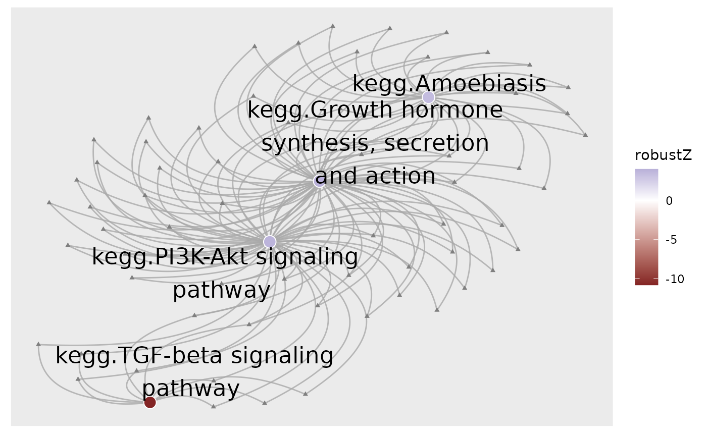
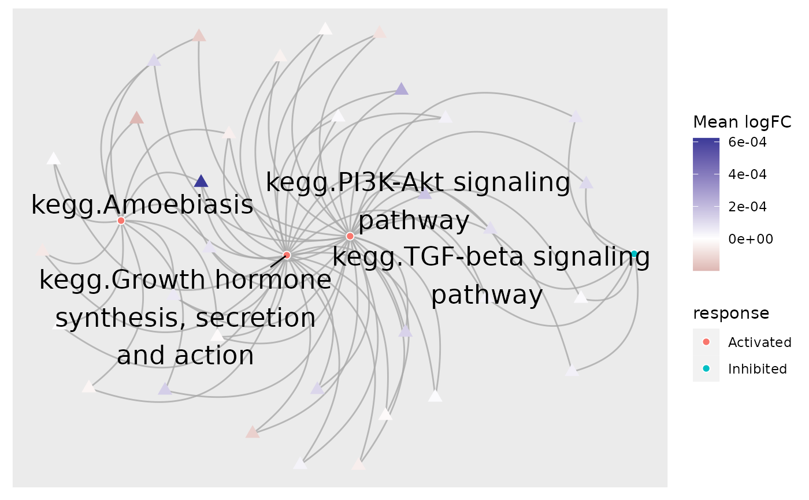
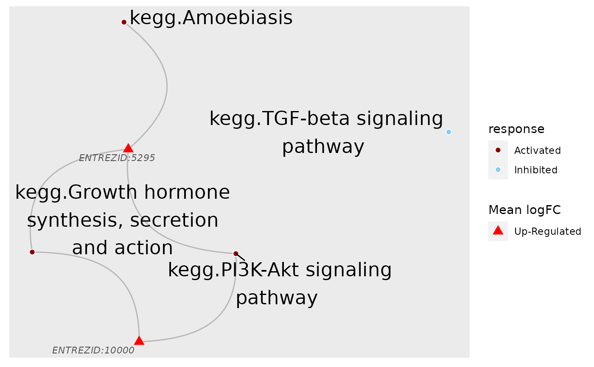

Plot pathways and genes contained in them as a network
plot_gs2gene(
normalisedScores,
gsTopology,
geneFC = NULL,
mapEntrezID = NULL,
colorGsBy = NULL,
foldGSname = TRUE,
foldafter = 2,
filterGeneBy = 2,
layout = c("fr", "dh", "gem", "graphopt", "kk", "lgl", "mds", "sugiyama"),
edgeColor = "darkgrey",
edgeAlpha = 0.8,
edgeArc = 0.5,
geneNodeSize = 3,
geneNodeShape = 17,
geneNameFace = c("italic", "plain", "bold", "bold-italic"),
geneNameColor = "grey30",
geneNameSize = 3,
labelGene = TRUE,
gsNodeSize = 2,
gsNodeShape = 21,
gsNodeStroke = 0.5,
gsNodeOutline = "white",
gsNameSize = 6,
gsNameColor = "black",
geneLegTitle = "Mean logFC",
gsLegTitle = colorGsBy,
maxOverlaps = 10,
...
)A data.frame derived from the
normalise_by_permu() function. Only gene-sets of interest should be included
List of pathway topology matrices generated using function
retrieve_topology()
An optional named vector of pathways' fold changes
Optional. A data.frame matching genes' entrez IDs to
another identifier with preferred labels. Must contain the columns:
"entrezid" and "mapTo"
Column within normalisedScores to color gene-set/pathway
nodes by
logical. Should long gene-set names be folded into two
lines
The number of words after which gene-set names should be folded.
Filtration cut-off applied to genes' connectivity (ie. how many pathways was a gene involved in).
The layout algorithm to apply. Accepts all layout supported by
igraph.
Color and transparency of edges
The bend of edges. 1 approximates a semi-circle whilst 0 will give a straight line.
Size and shape for gene nodes
Size, color and fontface to use for gene labels
logical(1) Should the gene names be included
Size for gene-set/pathway nodes
Shape for gene-set/pathway nodes. Should be a shape with a fill parameter, such as 21:25
Border thickness and color for gene-set/pathway nodes
Size and color of gene-set/pathway labels
character(1). Legend title for gene nodes
character(1) Legend title for gene-set/pathway nodes
passed to geom_node_text
Not used
A ggplot2 object
Taking the perturbation scores of a list of gene-sets derived from
normalise_by_permu() as input, this function matches gene-sets to
their associated genes by utilizing information from pathway topology matrices.
If providing logFC values as a named vector, the names must be entrezgene IDs
in the format of "ENTREZID:XXXX" for compatibility with the values returned
by retrieve_topology(). If not providing this vector, only genes associated
with two or more pathways will be added to the plot, however, it should be
noted that if omitting this vector, network plots can easily become
unmanageable.
Users can also choose to provide a mapEntrezID data.frame to match
entrezgene IDs to their chosen identifiers. The data.frame should contain
the columns: "entrezid" and "mapTo".
If geneFC is provided, gene nodes will be colored by values provided,
otherwise all gene nodes will drawn in grey.
Since some gene-sets could can contain hundreds of genes, it is not
recommended to plot all genes. If mapEntrezID data.frame is provided,
only genes included in that data.frame will be used in the plot.
It is strongly recommended to filter genes using some criteria, such as those
with the largest magnitude of change. If all pathway genes are desired,
please consider setting labelGene to FALSE to remove gene names.
load(system.file("extdata", "gsTopology.rda", package = "sSNAPPY"))
load(system.file("extdata", "normalisedScores.rda", package = "sSNAPPY"))
# Subset pathways significantly perturbed in sample R5020_N2_48
subset <- dplyr::filter(normalisedScores, adjPvalue < 0.05, sample == "R5020_N2_48")
subset$response <- ifelse(subset$robustZ > 0, "Activated", "Inhibited")
# Color gene-sets nodes by robust z-scores.
plot_gs2gene(
subset, gsTopology, colorGsBy = "robustZ", labelGene = FALSE, geneNodeSize = 1,
gsNodeSize = 4
) + scale_fill_gradient2()
#> Gene fold-changes were not provided as a named vector. All genes will be colored identically.

# When fold-changes are not provided, gene nodes are colored grey.
# To color genes by their direction of change, firstly compute single-sample logFC
data(logCPM_example)
data(metadata_example)
metadata_example <- dplyr::mutate(metadata_example, treatment = factor(
treatment, levels = c("Vehicle", "E2+R5020", "R5020")))
ls <- weight_ss_fc(
logCPM_example, metadata = metadata_example,
groupBy = "patient", treatColumn = "treatment",
sampleColumn = "sample"
)
# Provide fold-changes of sample R5020_N2_48 as a named vector
plot_gs2gene(
subset, gsTopology, geneFC = ls$logFC[,"R5020_N2_48"],
colorGsBy = "response", labelGene = FALSE
) + scale_colour_gradient2()

# By default, the function only include genes involved in at least 2 pathways,
# which can be overwritten by the `filterGeneBy` parameter. But there are still
# a large number of genes, making the plot cumbersome. Instead, only include
# fold-changes of genes within the top 500 absolute values for fold-change
top500 <- rank(1/abs(ls$logFC[,"R5020_N2_48"])) <= 500
fcByDir <- ifelse(ls$logFC[top500,"R5020_N2_48"] > 0, "Up-Regulated", "Down-Regulated")
plot_gs2gene(subset, gsTopology, geneFC = fcByDir, colorGsBy = "response") +
scale_fill_manual(values = c("darkred", "lightskyblue")) +
scale_colour_manual(values = c("red", "blue"))

# To make the gene labels more informative, map genes' entrez id to chosen identifiers.
load(system.file("extdata", "entrez2name.rda", package = "sSNAPPY"))
plot_gs2gene(
subset, gsTopology, geneFC = fcByDir, mapEntrezID = entrez2name,
colorGsBy = "response", gsNodeSize = 4
) +
scale_fill_manual(values = c("darkred", "lightskyblue"), name = "Pathway") +
scale_colour_manual(values = c("blue", "red"), name = "Gene\nDirection")